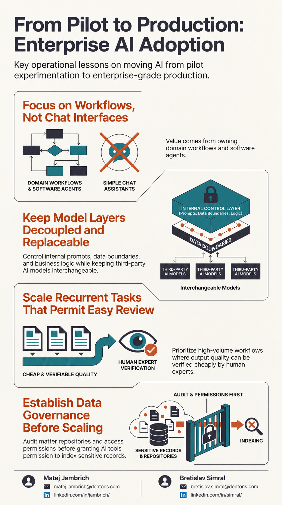

Conference resource
From Pilot to Production: Enterprise AI Adoption
Four operational lessons on moving AI from pilot experimentation to enterprise-grade production.


Conference resource
Four operational lessons on moving AI from pilot experimentation to enterprise-grade production.
